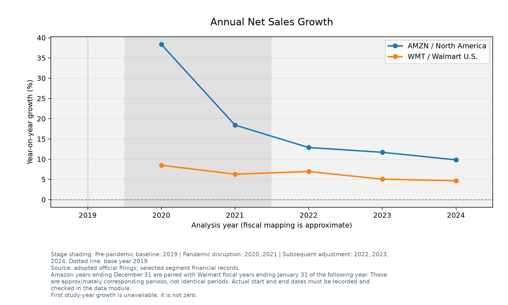
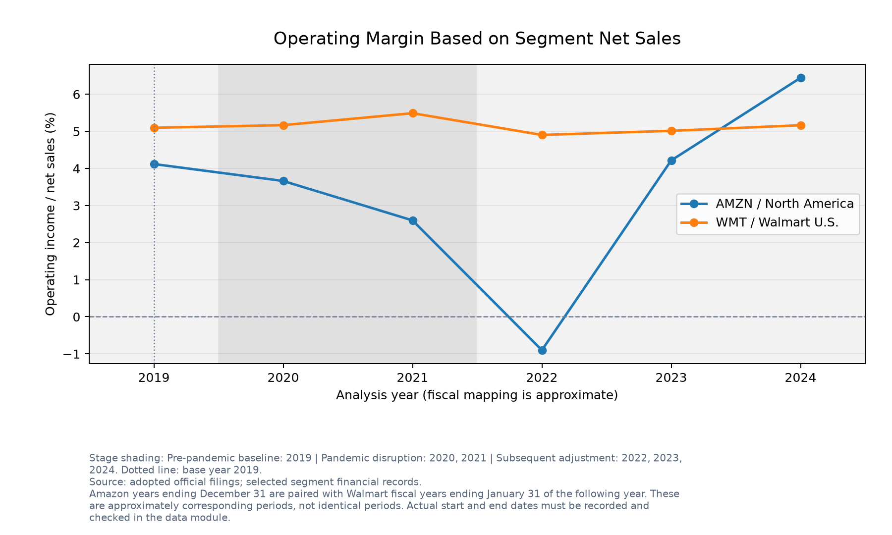
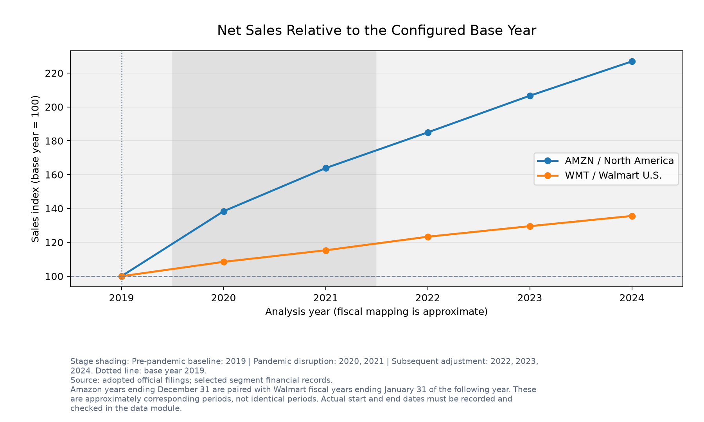

Sales Growth and Operating Profitability of Internet-Origin and Store-Origin Retailers: Amazon North America and Walmart U.S. Around the COVID-19 Pandemic, 2019-2024
Relative to a 2019 pre-pandemic baseline, how did sales growth and operating margins differ between Amazon North America and Walmart U.S. during 2020-2021 and the subsequent 2022-2024 adjustment period? This is a descriptive comparison, not an estimate of the causal effect of COVID-19.
Research design and definitions
Amazon years ending December 31 are paired with Walmart fiscal years ending January 31 of the following year. These are approximately corresponding periods, not identical periods. Actual start and end dates must be recorded and checked in the data module.
Sales growth = (current / previous annual net sales - 1) * 100. Operating margin = segment operating income / segment net sales * 100. Sales index = current / base-year net sales * 100. Percent values are already multiplied by 100. First study-year growth is unavailable and is shown as NA, not zero.
The configured reference year is 2019. Sales changes from that year are percentages; margin changes are percentage points. These cumulative sales changes are not CAGR.
Observed results
- Amazon.com, Inc. / North America: net sales in analysis year 2024 were 387,497 USD millions. Sales changed by +126.91% relative to 2019. Operating margin was 6.44%, a change of +2.32 percentage points from the base year. The lowest observed annual margin was -0.90% in analysis year 2022.
- Walmart Inc. / Walmart U.S.: net sales in analysis year 2024 were 462,415 USD millions. Sales changed by +35.60% relative to 2019. Operating margin was 5.16%, a change of +0.07 percentage points from the base year. The lowest observed annual margin was 4.90% in analysis year 2022.
Annual comparison charts



Annual values
| Company | Segment | Analysis year | Reported fiscal year | Study stage | Net sales (USD millions) | Operating income (USD millions) | Sales growth (%) | Operating margin (%) | Sales index |
|---|---|---|---|---|---|---|---|---|---|
| Amazon.com, Inc. | North America | 2019 | 2019 | Pre-pandemic baseline | 170,773.00 | 7,033.00 | NA | 4.12 | 100.00 |
| Amazon.com, Inc. | North America | 2020 | 2020 | Pandemic disruption | 236,282.00 | 8,651.00 | 38.36 | 3.66 | 138.36 |
| Amazon.com, Inc. | North America | 2021 | 2021 | Pandemic disruption | 279,833.00 | 7,271.00 | 18.43 | 2.60 | 163.86 |
| Amazon.com, Inc. | North America | 2022 | 2022 | Subsequent adjustment | 315,880.00 | -2,847.00 | 12.88 | -0.90 | 184.97 |
| Amazon.com, Inc. | North America | 2023 | 2023 | Subsequent adjustment | 352,828.00 | 14,877.00 | 11.70 | 4.22 | 206.61 |
| Amazon.com, Inc. | North America | 2024 | 2024 | Subsequent adjustment | 387,497.00 | 24,967.00 | 9.83 | 6.44 | 226.91 |
| Walmart Inc. | Walmart U.S. | 2019 | 2020 | Pre-pandemic baseline | 341,004.00 | 17,380.00 | NA | 5.10 | 100.00 |
| Walmart Inc. | Walmart U.S. | 2020 | 2021 | Pandemic disruption | 369,963.00 | 19,116.00 | 8.49 | 5.17 | 108.49 |
| Walmart Inc. | Walmart U.S. | 2021 | 2022 | Pandemic disruption | 393,247.00 | 21,587.00 | 6.29 | 5.49 | 115.32 |
| Walmart Inc. | Walmart U.S. | 2022 | 2023 | Subsequent adjustment | 420,553.00 | 20,620.00 | 6.94 | 4.90 | 123.33 |
| Walmart Inc. | Walmart U.S. | 2023 | 2024 | Subsequent adjustment | 441,817.00 | 22,154.00 | 5.06 | 5.01 | 129.56 |
| Walmart Inc. | Walmart U.S. | 2024 | 2025 | Subsequent adjustment | 462,415.00 | 23,882.00 | 4.66 | 5.16 | 135.60 |
Changes relative to the base year
| Company | Segment | Analysis year | Reported fiscal year | Net sales (USD millions) | Sales change from base (%) | Operating margin (%) | Margin change from base (pp) |
|---|---|---|---|---|---|---|---|
| Amazon.com, Inc. | North America | 2019 | 2019 | 170,773.00 | 0.00 | 4.12 | 0.00 |
| Amazon.com, Inc. | North America | 2020 | 2020 | 236,282.00 | 38.36 | 3.66 | -0.46 |
| Amazon.com, Inc. | North America | 2021 | 2021 | 279,833.00 | 63.86 | 2.60 | -1.52 |
| Amazon.com, Inc. | North America | 2022 | 2022 | 315,880.00 | 84.97 | -0.90 | -5.02 |
| Amazon.com, Inc. | North America | 2023 | 2023 | 352,828.00 | 106.61 | 4.22 | 0.10 |
| Amazon.com, Inc. | North America | 2024 | 2024 | 387,497.00 | 126.91 | 6.44 | 2.32 |
| Walmart Inc. | Walmart U.S. | 2019 | 2020 | 341,004.00 | 0.00 | 5.10 | 0.00 |
| Walmart Inc. | Walmart U.S. | 2020 | 2021 | 369,963.00 | 8.49 | 5.17 | 0.07 |
| Walmart Inc. | Walmart U.S. | 2021 | 2022 | 393,247.00 | 15.32 | 5.49 | 0.39 |
| Walmart Inc. | Walmart U.S. | 2022 | 2023 | 420,553.00 | 23.33 | 4.90 | -0.19 |
| Walmart Inc. | Walmart U.S. | 2023 | 2024 | 441,817.00 | 29.56 | 5.01 | -0.08 |
| Walmart Inc. | Walmart U.S. | 2024 | 2025 | 462,415.00 | 35.60 | 5.16 | 0.07 |
Stage summaries and available years
Each stage mean is an unweighted arithmetic mean of available annual values. The table reports the number of valid years for each metric. These are not pooled margins or compound growth rates. The single-year baseline is a reference, not an equal-length comparison group.
| Company | Segment | Study stage | Analysis years | Annual records | Growth: valid years | Growth: annual mean (%) | Margin: valid years | Margin: annual mean (%) | Index: valid years | Index: annual mean |
|---|---|---|---|---|---|---|---|---|---|---|
| Amazon.com, Inc. | North America | Pre-pandemic baseline | 2019 | 1 | 0 | NA | 1 | 4.12 | 1 | 100.00 |
| Amazon.com, Inc. | North America | Pandemic disruption | 2020, 2021 | 2 | 2 | 28.40 | 2 | 3.13 | 2 | 151.11 |
| Amazon.com, Inc. | North America | Subsequent adjustment | 2022, 2023, 2024 | 3 | 3 | 11.47 | 3 | 3.25 | 3 | 206.16 |
| Walmart Inc. | Walmart U.S. | Pre-pandemic baseline | 2019 | 1 | 0 | NA | 1 | 5.10 | 1 | 100.00 |
| Walmart Inc. | Walmart U.S. | Pandemic disruption | 2020, 2021 | 2 | 2 | 7.39 | 2 | 5.33 | 2 | 111.91 |
| Walmart Inc. | Walmart U.S. | Subsequent adjustment | 2022, 2023, 2024 | 3 | 3 | 5.55 | 3 | 5.03 | 3 | 129.50 |
Scope and limitations
- 2019 supplies a pre-pandemic reference for sales scale and operating margin.
- The 2020-2021 and 2022-2024 stages are study groupings, not estimates of pandemic effects or a claim that the pandemic ended in 2022.
- This is a small, descriptive segment comparison. One pre-pandemic year cannot establish a pre-pandemic trend or a counterfactual.
- Amazon North America includes service revenue and covers a different geography from Walmart U.S.; the segments are not identical retail businesses.
- Historical columns in the adopted official reports are used; later restatements are not automatically included.
- Changes in these financial indicators alone cannot identify the causes of the observed patterns.
- North America: Use North America segment net sales and operating income, not consolidated totals.
- North America: The segment excludes AWS but includes advertising, subscription services, and third-party seller services.
- North America: The segment's geographical scope and revenue recognition differ from Walmart U.S.
- Walmart U.S.: Use Walmart U.S. segment net sales and operating income, not consolidated totals.
- Walmart U.S.: Exclude Sam's Club and Walmart International from the selected segment data.
- Walmart U.S.: Walmart fiscal years end on January 31 of the labeled year.
Source and period audit
| Company | Segment | Analysis year | Reported fiscal year | Period start | Period end | Source section and year columns | Basis for period dates | Source access date |
|---|---|---|---|---|---|---|---|---|
| Amazon.com, Inc. | North America | 2019 | 2019 | 2019-01-01 | 2019-12-31 | Note 10 - Segment Information; North America; fiscal 2019 column | Annual December 31 year-end in source table; January 1 start derived from annual calendar period | 2026-10-10 |
| Amazon.com, Inc. | North America | 2020 | 2020 | 2020-01-01 | 2020-12-31 | Note 10 - Segment Information; North America; fiscal 2020 column | Annual December 31 year-end in source table; January 1 start derived from annual calendar period | 2026-10-10 |
| Amazon.com, Inc. | North America | 2021 | 2021 | 2021-01-01 | 2021-12-31 | Note 10 - Segment Information; North America; fiscal 2021 column | Annual December 31 year-end in source table; January 1 start derived from annual calendar period | 2026-10-10 |
| Amazon.com, Inc. | North America | 2022 | 2022 | 2022-01-01 | 2022-12-31 | Note 10 - Segment Information; North America; fiscal 2022 column | Annual December 31 year-end in source table; January 1 start derived from annual calendar period | 2026-10-10 |
| Amazon.com, Inc. | North America | 2023 | 2023 | 2023-01-01 | 2023-12-31 | Note 10 - Segment Information; North America; fiscal 2023 column | Annual December 31 year-end in source table; January 1 start derived from annual calendar period | 2026-10-10 |
| Amazon.com, Inc. | North America | 2024 | 2024 | 2024-01-01 | 2024-12-31 | Note 10 - Segment Information; North America; fiscal 2024 column | Annual December 31 year-end in source table; January 1 start derived from annual calendar period | 2026-10-10 |
| Walmart Inc. | Walmart U.S. | 2019 | 2020 | 2019-02-01 | 2020-01-31 | Item 7 - MD&A; Walmart U.S. Segment; fiscal 2020 column | Annual January 31 year-end in source table and U.S. fiscal calendar; February 1 start derived from annual period | 2026-10-10 |
| Walmart Inc. | Walmart U.S. | 2020 | 2021 | 2020-02-01 | 2021-01-31 | Item 7 - MD&A; Walmart U.S. Segment; fiscal 2021 column | Annual January 31 year-end in source table and U.S. fiscal calendar; February 1 start derived from annual period | 2026-10-10 |
| Walmart Inc. | Walmart U.S. | 2021 | 2022 | 2021-02-01 | 2022-01-31 | Item 7 - MD&A; Walmart U.S. Segment; fiscal 2022 column | Annual January 31 year-end in source table and U.S. fiscal calendar; February 1 start derived from annual period | 2026-10-10 |
| Walmart Inc. | Walmart U.S. | 2022 | 2023 | 2022-02-01 | 2023-01-31 | Item 7 - MD&A; Walmart U.S. Segment; checked against segment note; fiscal 2023 column | Annual January 31 year-end in source table and U.S. fiscal calendar; February 1 start derived from annual period | 2026-10-10 |
| Walmart Inc. | Walmart U.S. | 2023 | 2024 | 2023-02-01 | 2024-01-31 | Item 7 - MD&A; Walmart U.S. Segment; checked against segment note; fiscal 2024 column | Annual January 31 year-end in source table and U.S. fiscal calendar; February 1 start derived from annual period | 2026-10-10 |
| Walmart Inc. | Walmart U.S. | 2024 | 2025 | 2024-02-01 | 2025-01-31 | Item 7 - MD&A; Walmart U.S. Segment; checked against segment note; fiscal 2025 column | Annual January 31 year-end in source table and U.S. fiscal calendar; February 1 start derived from annual period | 2026-10-10 |
Adopted official report links
- https://www.sec.gov/Archives/edgar/data/1018724/000101872422000005/amzn-20211231.htm
- https://www.sec.gov/Archives/edgar/data/1018724/000101872425000004/amzn-20241231.htm
- https://www.sec.gov/Archives/edgar/data/104169/000010416922000012/wmt-20220131.htm
- https://www.sec.gov/Archives/edgar/data/104169/000010416925000021/wmt-20250131.htm
Amounts were manually transcribed from free official reports and checked in Module 02. The pipeline does not fetch new filings during reporting. Full report HTML snapshots are not bundled.